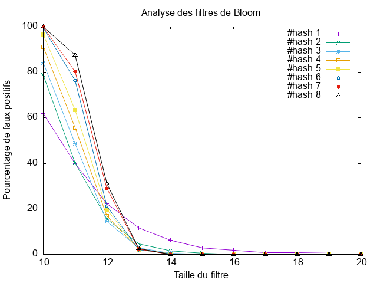

Tp Bloom
État du TP
Décrivez ici l'état d'avancement du TP.
Réponses aux questions
Indiquez ici les réponses aux questions posées dans le TP. Vous reprendrez le numéro de la section et le numéro de la question. Par exemple pour répondre à la question 3 de la section 2.4 vous indiquerez :
La classe BloomFilter du module bloomfilter
Q2:
Après avoir implémenter la méthode hash() de la classe HashFunctions, ainsi que le constructeur et les deux méthodes add()et contains() de la class BloomFilter.
On a testé nos fonctions en utilisant le programme de test déjà écrit qui insère le mot "timoleon" puis teste sa présence dans le filtre et la présence d'un mot aléatoire avec la commande suivante:
src % python3 test.py
Et on a eu le résultat suivant:
timoleon est present
Après avoir ajouter cette ligne aussi au programme de test du fichier test.py, et qui permet de rajouter le mot aléatoire génerer par la fonction random_word(), pour pouvoir tester sa présence dans le filtre :
if __name__ == "__main__":
hashes = HashFunctions(8)
bf = BloomFilter(16, hashes)
w = random_word()
bf.add("timoleon")
bf.add(w) # LIGNE RAJOUTÉE
if bf.contains("timoleon"):
print("%s est present" % ("timoleon"))
if bf.contains(w):
print("%s est present" % (w))
On a eu le résultat suivant :
timoleon est present
IQufLUs est present
Et qui permet de conclure que:
-
La fonction
random_word()permet bien génerer un mot compris entre 4 et 7 lettres. -
La fonction
add()permet bien de rajouter un élement au filtre. -
La fonction
contains()permet bien de vérifier la présence d'un élement dans le filtre.
Q3:
Pour trouver une taille du filtre pour laquelle un mot tiré au hasard apparaît présent, ce qui veut dire qu'on a un faux positif, après avoir tester plusieurs valeurs de n, je n'ai réussi d'obtenir aucun faux positif, donc j'ai décider de modifier un peu le code de test du fichier test.py pour automatiser cette recherche de la taille du filtre avec le code suivant:
if __name__ == "__main__":
for i in range(21):
hashes = HashFunctions(2**i)
bf = BloomFilter(16, hashes)
w = random_word()
bf.add("timoleon")
if bf.contains(w):
print("%s est present avec i=%s" % (w , i))
break
Avec ce code qui permet de tester les 21 premiers (de 0 à 20) taille du filtre, j'ai pu obtenir ce résultat:
src % python3 test.py
dheUCve est present avec i=20
Après un deuxième teste, j'ai pu obtenir ce résultat:
src % python3 test.py
DkaINUva est present avec i=20
Donc taille du filtre pour laquelle un mot tiré au hasard apparaît présent, ce qui veut dire qu'on a un faux positif est 2^20 donc n=20.
L'analyse des faux-positifs
Q4:
Après avoir implémenter l'algorithme de test de l'influence du nombre de fonctions de hachage et de la taille du filtre sur le nombre de faux positifs, et qui permet d'enregistrer les résultats dans un fichier nommé res.txt, j'ai pu utiliser le programme Gnuplot dans le fichier tp-bloom.plt pour tracer la courbe des résultats enregistré dans le fichier res.txt, j'ai eu le graphe suivant:

En analysant visuelement ce graphe, on peut constater trois partis du graphe distinctes:
-
Quand la taille du filtre est petite donc
n = 10 à 11:- Le pourcentage de faux positifs est très élevés pour toutes les valeurs de nombres de fonctions de hachage.
-
Quand la taille du filtre est moyenne donc
n = 12 à 14:- Le pourcentage de faux positifs commence à diminue pour toutes les valeurs de nombres de fonctions de hachage.
-
Quand la taille du filtre est grande donc
n > 14:- Le pourcentage de faux positifs commence à s'annuler pour toutes les valeurs de nombres de fonctions de hachage.
C'est résultats obtenus sont du au faite que si on a un filtre trop petit cela entraîne beaucoup de faux positifs, même avec unn grand nombre de fonctions de hachage, et que si on a un grand filtre cela fait diminuer automatiquement le nombre de faux positifs, ce qui rends le nombres fonctions de hachage moins important vu que si on le fait varié sur un filtre de grande taille les résultats seront les mêmes (Un pourcentage de de faux positifs proche du 0%).
En ce qui concerne le bon choix du nombre de fonctions de hachage en fonction de la taille du filtre de Bloom:
-
Si la taille du filtre de Bloom est petite, que ce soit nombre de fonctions de hachage est grand ou petit le pourcentage de faux positifs sera grand.
-
Si la taille du filtre de Bloom est trop grande, que ce soit nombre de fonctions de hachage est grand ou petit le pourcentage de faux positifs sera très petit mais le problème de cette approche c'est que ça va entrainer un grand espace mémoire ce qui n'est pas optimale même si ça réduit le pourcentage de faux positifs.
-
Si la taille du filtre de Bloom est compris entre
2^13et2^14, et que le nombre de fonctions de hachage est compris entre 3 et 5, cela représente la meilleur combinaison de la taille du filtre de Bloom et du nombre de fonctions de hachage. Et ce qui permettra d'avoir une taille du filtre de Bloom pas trop grande pour rien et un nombre de fonctions de hachage non plus excessive pour limiter grande consommation mémoire et éviter un temps de calcul plus élevé.